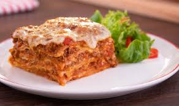

Coxinha
>
Ingredientes
Recheio
- 1 peito de frango pequeno, sem pele e sem osso (280 g)
- 3 xícaras (chá) de água (600 ml)
- 1 colher (sopa) de óleo
- meia cebola pequena picada
- 1 dente de alho picado
- 2 colheres (sopa) de polpa de tomate
- 1 colher (sopa) de salsa picada
Massa
- 2 colheres (sopa) de óleo
- 1 pitada de sal
- 2 e meia xícaras (chá) de farinha de trigo (280 g)
- 1 ovo batido
- meia xícara (chá) de farinha de rosca
Modo de Preparo
Faça o recheio: em uma panela de pressão. Tampe a panela e deixe cozinhar em fogo médio, por 20 minutos, após ferver.
Desligue o fogo e espere a pressão ceder. Retire o frango e desfie, reservando o caldo do cozimento.
Prepare a massa: transfira o caldo do cozimento ainda quente (500 ml) para uma panela média, junte o óleo e o sal, e leve ao fogo médio. Acrescente a farinha de trigo de uma única vez e cozinhe, mexendo, por 5 minutos, ou até soltar do fundo da panela. Retire do fogo e deixe esfriar.
Enquanto isso, finalize o recheio: em uma panela média, coloque o óleo e leve ao fogo alto para aquecer. Junte a cebola e o alho, e refogue por 3 minutos, ou até dourar. Acrescente o frango desfiado e a polpa de tomate, e refogue por 2 minutos, ou até obter uma mistura homogênea. Retire do fogo, misture a salsa e deixe amornar.
Divida a massa em 20 esferas. Abra cada uma delas entre a palma das mãos e distribua o recheio. Modele em formato de coxinhas e passe no ovo e na farinha de rosca.
Frite aos poucos, em imersão, em óleo não muito quente, por 4 minutos, ou até dourarem. Escorra em papel-toalha e sirva em seguida.
Pão de Queijo

Ingredientes
- 210 g de polvilho azedo
- 90 g de polvilho doce
- 3 g de sal
- 45 g de óleo vegetal (milho, canola, soja, etc.)
- 180 g de leite integral
- 1 ovo
- 30 g de queijo parmesão
Modo de Preparo
- Ligue o forno a 210 °C.
- Em uma tigela grande, adicione 210 g de polvilho azedo
- 90 g de polvilho doce
- E 3 g uma colher de chá de sal
- Misture os 3 ingredientes secos
- Em uma panela coloque 45 g de óleo
- E 180 gramas de leite integral
- Ligue o fogo médio e aguarde 5 minutos
- Desligue o fogo quando o leite ferver e começar a cobrir o óleo
- Com cuidado, despeje a mistura quente sobre o polvilho
- Mexa com uma colher e aguarde esfriar até conseguir colocar as mãos
- Enquanto isso, vamos ralar os queijos, usando o lado mais grosso do ralador
- A mistura já esfriou, então vamos adicionar um ovo inteiro
- E comece a mexer: uma mão segura a tigela e a outra pega o polvilho seco e leva até o meio
- Depois pode apertar bem a massa para misturar todos os ingredientes
- Eu vou colocar mais 10 g de leite, pra deixar a massa um pouco mais grudenta
- E vá apertando e dobrando a massa até voltar a ter uma consistência uniforme
- Vamos colocar 180 g de queijo meia cura
- E 30 g de parmesão ralado
- Aperte novamente só até misturar todo o queijo
- Entre 60 e 70 gramas é um bom tamanho de pão de queijo.
- Eu recomendo medir toda massa e dividir por 12, pois sempre vai ter uma variação no peso final. Vou fazer peças de 63 gramas
- Pese uma porção de massa e enrole com as duas mãos até formar uma bola
- Use óleo nas mãos se estiver grudando e passe em toda superfície do pão de queijo.
- Isso também evita que grude na assadeira e ajuda a dourar a crosta
- Distribua as peças com um espaço de uns 4 centímetros entre elas
- E já pode levar para assar
- Serão 30 minutos no forno pré-aquecido a 210°C.
- Se a fileira lá do fundo começar a dourar e a da frente ainda não, vire os pães e deixe mais uns 5 minutos
- e já pode servir!
Panqueca
Ingredientes
Recheio
- 2 xícaras de farinha de trigo (280 gramas)
- 2 copos americanos de leite
- 3 unidades de ovo
- 1 colher de café de fermento em pó
- 1 pitada de sal
- óleo ou manteiga para fritar
Massa
- 500 gramas de carne moída
- 125 gramas de molho de tomate caseiro
- 3 colheres de sopa de água
- 100 gramas de cebola pequena
- 1 unidade de azeitonas
- 1 pacote de queijo ralado
- Pimenta
- Sal
Modo de Preparo
Comece preparando suas panquecas de carne moída pela massa: bata no liquidificador os ovos e o leite e, aos poucos, adicione a farinha junto com o fermento e o sal. O resultado deverá ser um creme homogêneo.
Numa frigideira média antiaderente coloque um pouco de óleo ou manteiga para fritar as panquecas. Pegue uma porção da massa de panqueca com uma concha de sopa e verta sobre a frigideira.
Quando a panqueca começar borbulhando, vire-a para fritar do outro lado. Conte 30 segundos e retire para um prato com pano toalha. Repita até esgotar toda a massa das panquecas de carne moída.
Prepare agora o recheio das panquecas: em um tacho coloque refogando a cebola picada e o molho de tomate caseiro (confira a receita) com as três colheres de água, para não secar. Passados 5 minutos acrescente a carne moída e tempere com sal e pimenta do reino a gosto.
Mexa de vez em quando e quando a carne estiver cozinhada, adicione as azeitonas picadas. Deixe cozinhar por mais 5 minutos e depois desligue o fogo. Deixe esfriar um pouco.
Forre o fundo de um refratário de vidro com um pouco do molho do recheio. Pegue em uma panqueca aberta e coloque no centro uma porção da carne moída e um pouco de queijo ralado, enrole e coloque no refratário de vidro.
Repita até esgotar quase todo o recheio e o que ficar sobrando verta sobre as panquecas de carne moída. Polvilhe também o restante queijo e leve a gratinar no forno pré-aquecido a 180ºC durante cerca de 15 minutos.
Passado esse tempo retire do forno as panquecas de carne moída. Sirva quentes acompanhadas de arroz ou salada simples. Bom apetite!
Lasanha

Ingredientes
- 2 colheres (sopa) de óleo
- 1 cebola média picada (150 g)
- 400 g de patinho bovino moído
- 2 caixinhas de polpa de tomate (1040 g)
- 2 tomates médios picados (300 g)
- meia xícara (chá) de água (100 ml)
- meia colher (chá) de sal
- 1 pacote de massa de lasanha (250 g)
- 200 g de presunto fatiado
- 300 g de muçarela fatiada
Modo de Preparo
Em uma panela grande, coloque o óleo e leve ao fogo alto para aquecer. Junte a cebola e refogue por 2 minutos. Acrescente a carne, aos poucos, e frite por 10 minutos, ou até o líquido secar. Adicione o tomate e refogue por 3 minutos, ou até que comece a desmanchar.
Junte a polpa de tomate, a água, o sal, e deixe cozinhar em fogo baixo, com a panela semitampada, por 5 minutos, ou até encorpar levemente. Retire do fogo.
Em um refratário retangular grande (23 x 35 cm), faça camadas com o molho, a massa, o presunto e a muçarela, intercalando e repetindo até finalizar com o molho e a muçarela.
Cubra com papel-alumínio e leve ao forno médio (180 graus), preaquecido, por 20 minutos, ou até que a massa fique macia. Remova o papel-alumínio e volte ao forno por mais 5 minutos, ou até dourar o queijo.
Retire do forno e sirva em seguida.